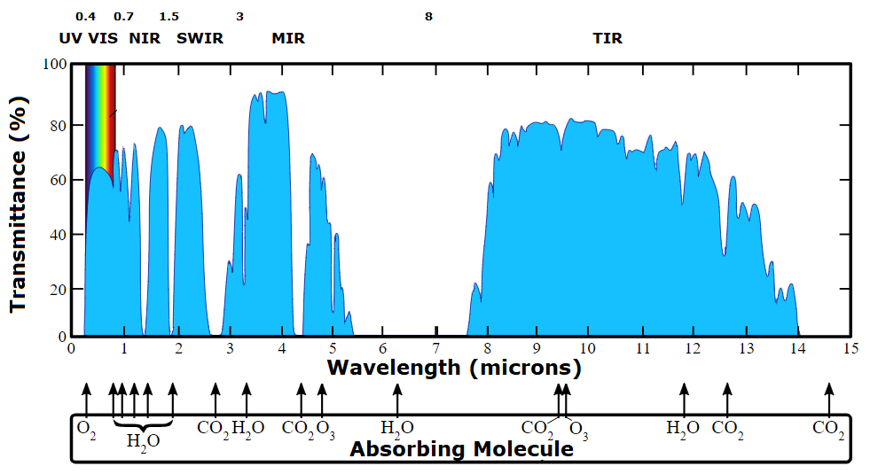
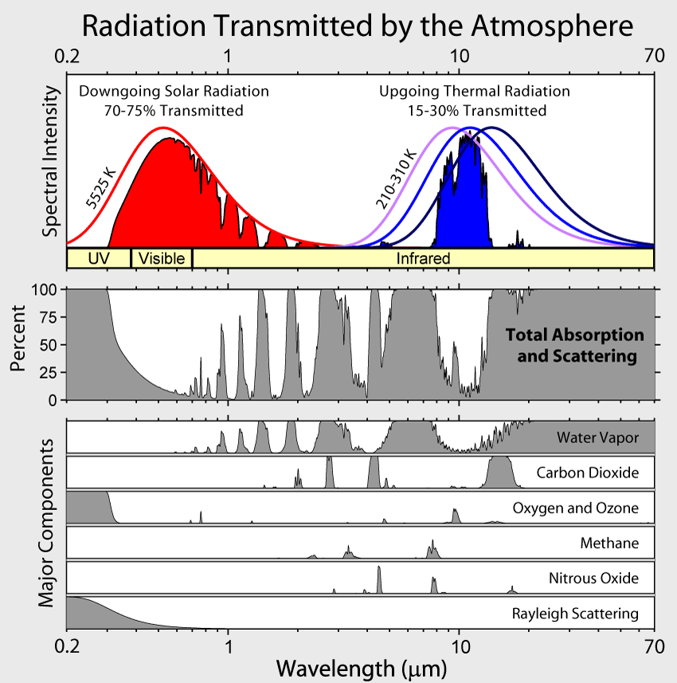

{kind=link}

Transmission in the atmosphere varies by wavelength. Particular gasses cause each of the absorption bands. Note the effects of CO2, particularly in the TIR, which explain its role as a greenhouse gas.
 |
| Translated from Russian at https://commons.wikimedia.org/wiki/File:Atmosfaerisk_spredning-ru.svg |
| Landsat 8 Band | Sentinel-2 Band | Use |
| Band 1 Coastal/aerosol 0.43-0.45 | B01 : 443 nm (60 m) | This edge of the blue suffers from scattering (what makes the sky blue). It has two main uses: imaging shallow water, and tracking fine particles like dust and smoke. By itself, its output looks a lot like Band 2 (normal blue), but if we contrast them and highlight areas with more deep blue, we can see differences. |
| B09 : 945 nm (60 m) | Band 9 measures moisture in the atmosphere, compared to Band 8a in an atmospheric window region. Band 9 is the measurement channel in the absorption region. | |
| Band 9 cirrus 1.36-1.38 | B10 : 1375 nm (60 m) | Anything that appears clearly in it must be reflecting very brightly and/or be above most of the atmosphere, which absorbs completely at this wavelength. These clouds are hard to see otherwise. |
|
|
|
https://www.usgs.gov/faqs/ |
 |
| https://commons.wikimedia.org/wiki/File:Atmospheric_Transmission.png |
{kind=link}